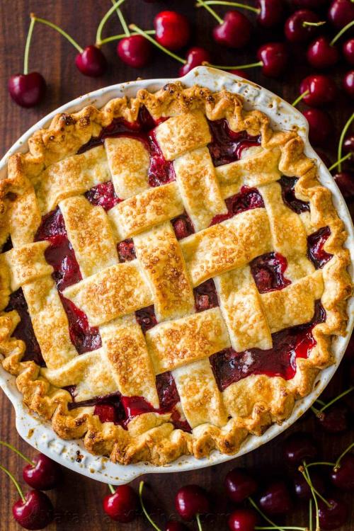
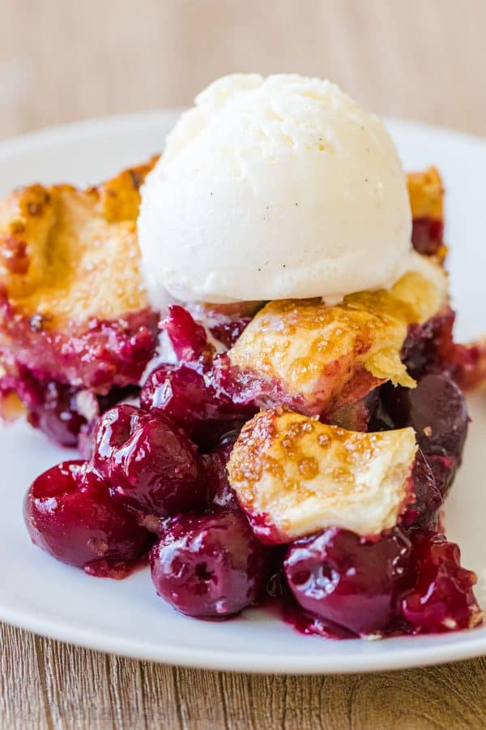
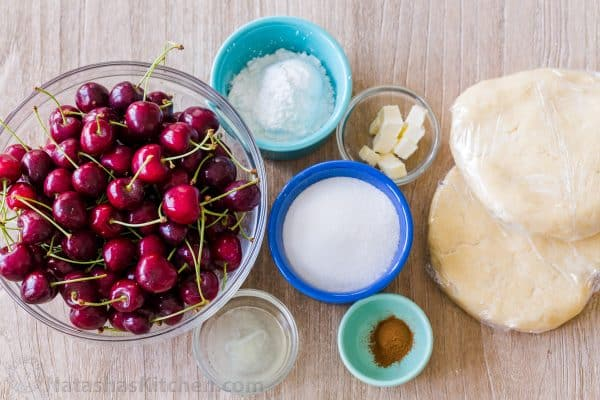
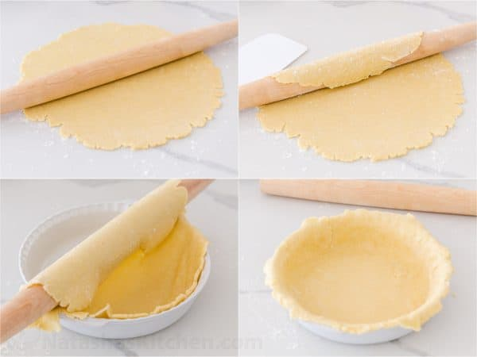
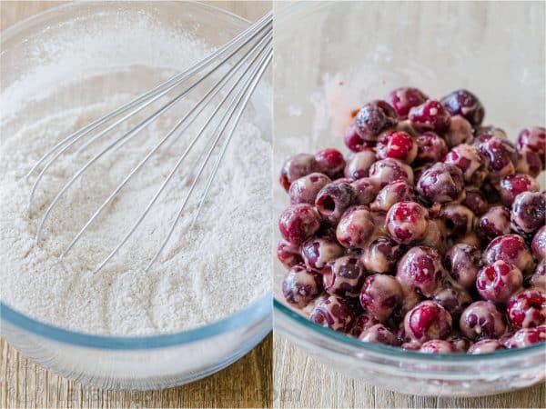
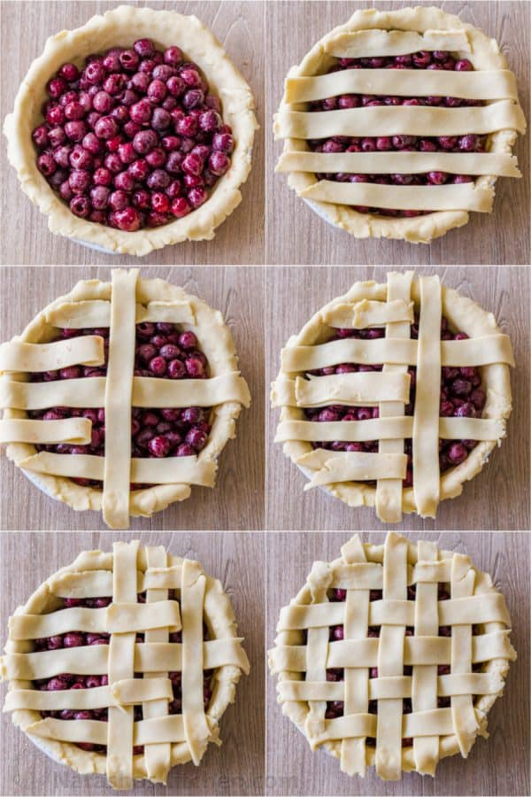
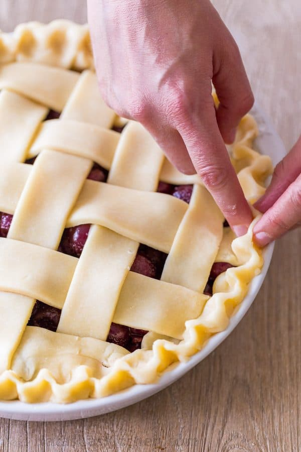
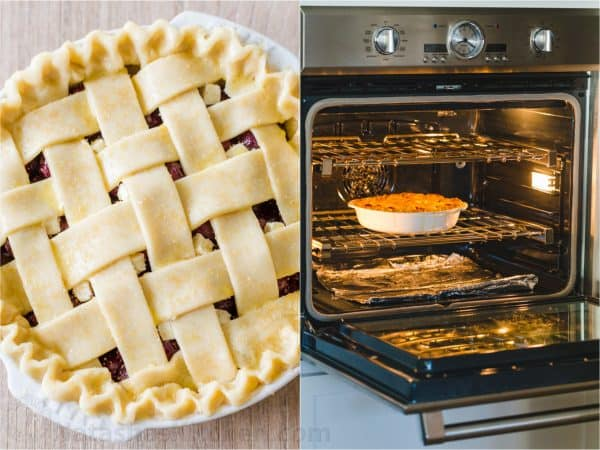

Classic Cherry Pie Recipe
July 12, 2019
There’s nothing like a fresh Cherry Pie bubbling through a rich, flaky crust. Learn how to make the best cherry pie from scratch with our easy, go-to Pie Crust and fresh or frozen cherries.
Homemade pies are easy to make and so satisfying to eat. We change up the fruit with the seasons and make apple pies in the cooler months, then blueberry pie, juicy peach pie and of course this sweet cherry pie in Summer.

Homemade Cherry Pie Recipe:
Memories are made around homemade pies and there’s something so satisfying about creating a pie from scratch.
The only downside to a homemade pie is the sweet torture of waiting for it to cool. For easier serving, let the pie cool almost to room temperature so the juices thicken. If you slice into a hot pie, the filling will slide out.
Don’t forget to top each slice with a generous scoop of vanilla ice cream. It will melt slightly into the slice, making it irresistibly good.

For a Sour Cherry Pie:
Since sour cherries are generally smaller, you will need about 2 1/2 to 3 lbs (or 6 cups, pitted) sour cherries. Since sour cherries are more tart, use 1 cup of sugar.

How to Transfer a Pie Crust to the Pan:
Transferring pie crust to a pie pan is easy. Flour your work surface before rolling out the dough to prevent sticking.
- Roll the first pie crust to a 13″ diameter circle
- Roll the crust onto your rolling pin
- Unroll crust over your pie pan

The Best Cherry Pie Filling:
A homemade cherry pie filling is easy to make and takes just a few ingredients. The corn starch creates a thick bubbly cherry filling while the cinnamon and lemon juice amplifies the flavor of the cherries.
- Stir together cherries and lemon juice.
- Whisk together corn starch, sugar and cinnamon and combine with cherries.

Lattice Pie Crust Tutorial:
- Place 5 strips of dough horizontally over the pie filling, with the longer strips in the center and shorter strips towards edges.
- Fold back the 2nd and 4th strips halfway and place a long vertical strip of dough in the center.
- Fold the strips back over the new line then fold back the alternate strips (1st, 3rd, and 5th). Continue adding and alternating strips then switch to the other side of the pie, until lattice is complete.

How to Crimp Pie Crust:
All you need to make a beautiful crimped or scalloped pie crust is your fingers. Once you have tucked in the excess pie dough, crimp the crust edges by pushing the dough out with your index finger and at the same time pushing/pinching the dough around it with the thumb and forefinger of your other hand, repeating all the way around the edge.

Pro Tips for the Best Cherry Pie:
- Freeze the unbaked pie 10-15 minutes while the oven preheats (keeps crust from browning too fast).
- Brush the pie crust with egg wash (1 egg beaten with 1 Tbsp milk or water) and sprinkle with coarse sugar just before baking.
- Arrange oven rack to the lower third of the oven.
- For easier cleanup: place a sheet of foil (or slide a sheet pan) under the pie once you turn the heat down to 350˚F.
